Floating point error¶
This page maybe follows from Points on floats
I ran into trouble trying to understand floating point error. After reading Wikipedia floating point, Wikipedia machine epsilon and What every computer scientist should know about floating point, I felt the need of some more explanation, and so here it is.
Taking the notation from Every computer scientist; let’s imagine we have a
floating point number that has base 10 and 3 significand digits, say  . Because we only have 3 digits, the next largest number that we
can represent is obviously 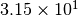. This number differs from by one unit in the last place (ULP). Any real number
. Because we only have 3 digits, the next largest number that we
can represent is obviously 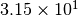. This number differs from by one unit in the last place (ULP). Any real number  that is
between 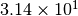 and can at best be represented
with one of these two numbers. Let’s say is actually
that is
between 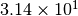 and can at best be represented
with one of these two numbers. Let’s say is actually  ; now
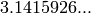 is best represented in our numbers as , and the
rounding error is 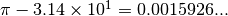 In the worst case, we
could have some real number 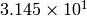 that will have rounding error
0.005. If we always choose the floating point number nearest to our real number
then the maximum rounding error occurs when is halfway between two
representable numbers; in that case the rounding error is 0.5 ULP.
; now
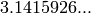 is best represented in our numbers as , and the
rounding error is 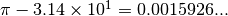 In the worst case, we
could have some real number 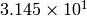 that will have rounding error
0.005. If we always choose the floating point number nearest to our real number
then the maximum rounding error occurs when is halfway between two
representable numbers; in that case the rounding error is 0.5 ULP.
We can generalize to floating point numbers of form:
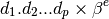
Where  is the number of significand digits,
is the number of significand digits,  is the base (10 in our
example), and
is the base (10 in our
example), and  is the exponent.
is the exponent.
The number is normalized if  is not zero.
is not zero.
1 ULP corresponds to:
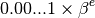
where there are 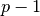 zeros in the significand. This is also:
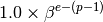
Note that any normalized floating point number with exponent has the same
value for 1 ULP. Let’s define:
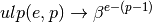
We can represent any real number  in normalized floating point format by
using an infinite significand:
in normalized floating point format by
using an infinite significand:
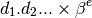
Again, normalized means that 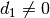. The ULP value for a real value
in some some finite floating point format is still 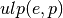 where is the
number of significand digits as above.
The IEEE standard for floating point specifies that the result of any floating
point operation should be correct to within the rounding error of the resulting
number. That is, it specifies that the maximum rounding error for an individual
operation (add, multiply, subtract, divide) should be 0.5 ULP. If 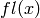 is
the number closest to that our floating point format can represent, and
is the exponent of in normalized infinite floating point, and is the
significand digits in our finite floating point format, then:
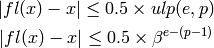
The relative error is the rounding error divided by the infinite precision real
number :
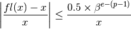
However, any value for that has some exponent has the same value for
 . Let
. Let  be the largest digit in base ;
thus 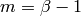. For example 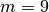 in base 10 (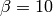). The values
of between 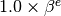 and 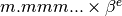 all have the
same value for 1 ULP = 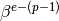. The relative rounding error will be
greater for smaller with the same exponent. Let 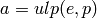. When 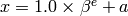, the relative rounding error is 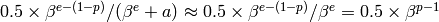. For 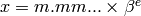, then 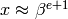
and the relative error 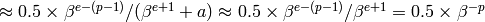. Therefore the
maximum relative error for a with any exponent is
be the largest digit in base ;
thus 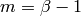. For example 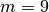 in base 10 (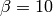). The values
of between 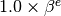 and 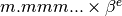 all have the
same value for 1 ULP = 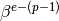. The relative rounding error will be
greater for smaller with the same exponent. Let 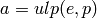. When 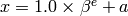, the relative rounding error is 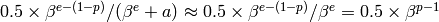. For 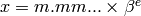, then 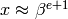
and the relative error 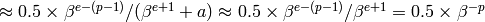. Therefore the
maximum relative error for a with any exponent is  .
.
Now note that 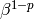 is the ULP for 1; that is 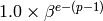
where is 0.